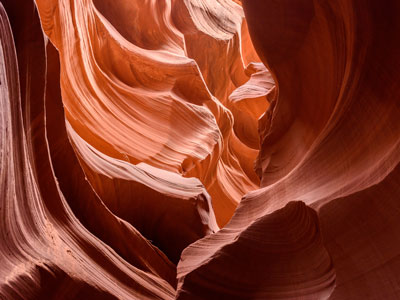
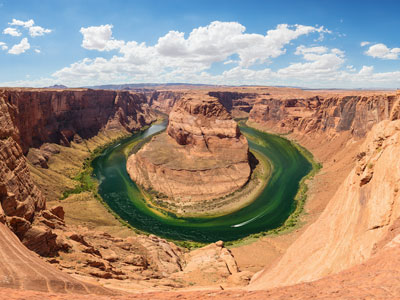
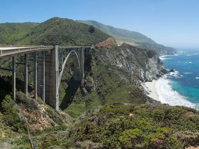
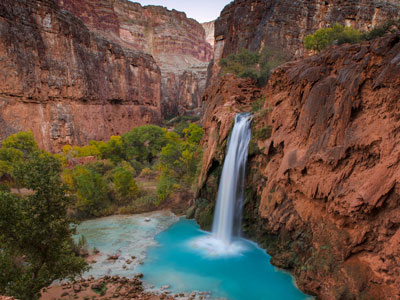
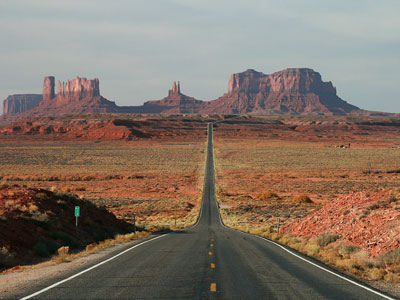
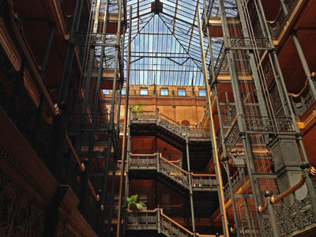
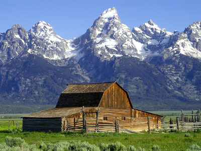
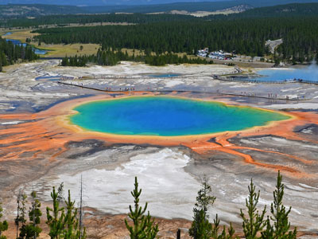

Have you seen an amazing picture of a destination all over Instagram, Facebook, etc. and wondered "Where was that picture taken!?" Well we're going to tell you here!
Cheaha Mountain
Alabama
Easy
Highest natural point in Alabama, located in Cheaha State Park, which offers a lodge, a restaurant, and other amenities
Denali
Alaska
West Buttress route, ~13 miles one-way, ~13,100 ft
Strenuous (technical mountaineering)
Massive glaciated peak rising above tundra and boreal forest landscapes, forming the highest elevation point on the continent and a centerpiece of a vast protected wilderness.

Richardmouser, CC BY-SA 4.0, via Wikimedia Commons; Image Size Adjusted

Humphreys Peak
Arizona
10.5 miles round-trip, 3,353 ft
Strenuous
Alpine summit trail ascending through conifer forests and tundra to the highest point in the state, offering panoramic views of the Grand Canyon, Painted Desert, and surrounding volcanic peaks.

King of Hearts, CC BY-SA 4.0, via Wikimedia Commons; Image Size Adjusted

Magazine Mountain
Arkansas
1.8 miles loop, 259 ft
Easy
Highest park in Arkansas including the peak of Mount Magazine (called Signal Hill) which contains The Lodge at Mount Magazine, cabins, trails, and a hang gliding area

Mount Whitney
California
22 miles round-trip, 6,100 ft
Very Strenuous
Tallest mountain in the contiguous United States and the Sierra Nevada, with an elevation of 14,505 feet

Thomas Wolf, www.foto-tw.de, CC BY-SA 3.0, via Wikimedia Commons; Image Size Adjusted
.jpg){kind=link}
Mount Elbert
Colorado
10.4 miles round-trip, 4,468 ft
Strenuous
Highest summit of the Rocky Mountains, the highest point in the state of Colorado, and the second-highest summit in the contiguous United States

Mount Frissell (south slope)
Connecticut
2.3–2.5 miles round-trip, 850–900 ft
Moderate
Forested Taconic Mountain summit with intersecting hiking trails that reach the highest elevation in one U.S. state and pass a historic tri‑state boundary marker.

Ebright Azimuth
Delaware
Easy
Subtle roadside rise marked by a small monument and survey marker identifying the highest elevation in Delaware.

Diliff, CC BY-SA 3.0, via Wikimedia Commons; Image Size Adjusted

Britton Hill
Florida
Easy
Gently sloping wooded ridge marked by a simple monument and picnic area identifying the highest elevation in Florida.

Diliff, CC BY-SA 3.0, via Wikimedia Commons; Image Size Adjusted

Brasstown Bald
Georgia
1.2–1.3 miles round-trip, 400–430 ft
Moderate
Highest point in Georgia located in the northeastern part of the state in the Blue Ridge Mountains
Mauna Kea
Hawaii
Mauna Kea Trail, ~12 miles round-trip, ~4,600 ft
Strenuous
Dormant volcano rising over 13,000 feet above sea level, home to world-class observatories, cultural sites, and a visitor station offering stargazing and educational programs.

Borah Peak
Idaho
8.2 miles round-trip, 5,301 ft
Very Strenuous
Highest mountain in the state of Idaho, with a trail to the summit

Charles Mound
Illinois
~2 miles round-trip, ~250 ft
Easy
Grassy summit on private land offering panoramic views of rolling hills and recognized as the highest natural point in the state.

Hoosier Hill
Indiana
Easy
Stone summit marker representing the highest elevation in the state of Indiana

Photo by Stephen Leonardi on Unsplash; Image Size Adjusted
Hawkeye Point
Iowa
Easy
Scenic rural landmark featuring panoramic views, interpretive displays, and a monument marking the highest natural elevation in the state.
Photo by Stephen Leonardi on Unsplash; Image Size Adjusted

Paul Hermans, CC BY-SA 3.0, via Wikimedia Commons; Image Size Adjusted

Mount Sunflower
Kansas
Easy
Subtle high-plains rise marked by a decorative sculpture and expansive prairie views, representing the highest natural elevation in a predominantly flat landscape.
Paul Hermans, CC BY-SA 3.0, via Wikimedia Commons; Image Size Adjusted
Black Mountain
Kentucky
Easy
The highest mountain peak in Kentucky, with a summit elevation of 4,145 feet

Sandy Horvath-Dori from Grand Junction, CO, USA, CC BY 2.0, via Wikimedia Commons; Image Size Adjusted
.jpg){kind=link}
Driskill Mountain
Louisiana
1.7–1.8 miles round-trip, 150–170 ft
Easy
Forested hill reached by a simple dirt trail leading to a small summit marker that represents the highest elevation in Louisiana.
Mount Katahdin
Maine
10.4 miles round-trip, 4,188 ft
Very Strenuous
Highest mountain in Maine at 5,269 feet (1,606 m), is the centerpiece of Baxter State Park, and a steep, tall massif formed from a granite intrusion weathered to the surface

Hoye-Crest
Maryland
2.1–2.3 miles round-trip, 650–700 ft
Moderate
Ridge-top clearing marked by a sign, picnic area, and small viewpoint designating the highest elevation in Maryland.

Photo by Leonel Heisenberg on Unsplash; Image Size Adjusted
Mount Greylock
Massachusetts
6.5–7.0 miles round-trip, 2,200–2,400 ft
Strenuous
3,489 feet (1,063 m) mountain located in the northwest corner of Massachusetts and is the highest point in the state

Tomas Castelazo, CC BY-SA 3.0, via Wikimedia Commons; Image Size Adjusted

Mount Arvon
Michigan
Natural sandstone butte on the Sedona skyline and one of the most-photographed sights in Arizona.

Wearethenext, CC BY-SA 3.0, via Wikimedia Commons; Image Size Adjusted

Eagle Mountain
Minnesota
7 miles round-trip, 656 ft
Moderate
Highest natural point in Minnesota, at 2,301 feet (701 m)

RyanFSpack, CC0, via Wikimedia Commons; Image Size Adjusted

Woodall Mountain
Mississippi
Easy
Low, wooded hill accessed by a gravel road and marked summit area representing the highest elevation in Mississippi.

Jon Sullivan, PD Photo., Public domain, via Wikimedia Commons; Image Size Adjusted

Taum Sauk Mountain
Missouri
Easy
Wilderness park featuring Missouri’s highest point, scenic overlooks, rugged trails, and a seasonal waterfall set among ancient volcanic rock formations.

Clément Bardot, CC BY-SA 3.0, via Wikimedia Commons; Image Size Adjusted

Granite Peak
Montana
22.6 miles round-trip, 7,614 ft
Very Strenuous (technical)
At an elevation of 12,807 feet (3,904 m) is the highest natural point in the state of Montana

PortableNYCTours, CC BY-SA 4.0, via Wikimedia Commons; Image Size Adjusted
.jpg){kind=link}
Panorama Point
Nebraska
Easy
Wide-open high-plains landmark marked by a simple stone monument offering expansive views and representing the highest natural elevation in the state.

Ian Howard, CC BY-SA 3.0, via Wikimedia Commons; Image Size Adjusted

Boundary Peak
Nevada
8.0 miles round-trip, 3,543 ft
Strenuous
Mountain with a peak elevation of 13,147 feet (4,007 m), is the highest natural point in Nevada

Liveit or livewithit, CC BY-SA 3.0, via Wikimedia Commons; Image Size Adjusted

Mount Washington
New Hampshire
Tuckerman Ravine Trail, 8.2 miles round-trip, 4,280 ft
Very Strenuous
highest peak in the Northeastern United States at 6,288.2 ft. with a cog railway, toll road and the Appalachian Trail crossing the summit

Fabio Achilli from Milano, Italy, CC BY 2.0, via Wikimedia Commons; Image Size Adjusted
.jpg){kind=link}
High Point State Park
New Jersey
Easy
Park covering 15,413 acres including part of the Kittatinny Mountains, the highest point in the state of New Jersey

Wheeler Peak
New Mexico
8.5 miles round-trip, 2,972 ft
Strenuous
13,167 ft peak is the highest natural point in the state of New Mexico, located southeast of Taos Ski Valley in the Sangre de Cristo Mountains, the southernmost subrange of the Rocky Mountains

Jeffhollett, CC BY-SA 4.0, via Wikimedia Commons; Image Size Adjusted

Mount Marcy
New York
14.8 miles round-trip, 3,166 ft
Strenuous
Highest point in New York, with its stature and expansive views make it a popular destination for hikers, who crowd its summit in the summer months

Mount Mitchell
North Carolina
Easy
The highest peak of the Appalachian Mountains and the highest peak in mainland eastern North America

White Butte
North Dakota
1.7 miles round-trip, 330–500 ft
Easy to Moderate
The highest natural point in the state, featuring panoramic views of prairies and badlands from a prominent butte with cultural and geological significance.

Paul Kordwig Post.eingang, CC BY-SA 3.0, via Wikimedia Commons; Image Size Adjusted

Campbell Hill
Ohio
Easy
Broad grassy rise with a paved access path and summit marker, representing the highest elevation in Ohio

Photo by Elizabeth Villalta on Unsplash; Image Size Adjusted
Black Mesa
Oklahoma
8.4 miles round-trip, 600–700 ft
Moderate
Mesa reaching 4,973 feet (1,516 m), the highest point in the state of Oklahoma

Minipaula, CC BY-SA 3.0, via Wikimedia Commons; Image Size Adjusted

Mount Hood
Oregon
South Side route, ~7 miles round-trip, ~5,200 ft
Strenuous (technical mountaineering)
Oregon's highest mountain, offers the only year-round lift-served skiing in North America Jeff P from Berkeley, CA, USA, CC BY 2.0, via Wikimedia Commons; Image Size Adjusted
.jpg){kind=link}
Minipaula, CC BY-SA 3.0, via Wikimedia Commons; Image Size Adjusted
Mount Davis
Pennsylvania
Easy
Highest point in Pennsylvania, the summit of may be ascended by car or a number of hiking trails

M.mastrangelo, CC BY-SA 4.0, via Wikimedia Commons; Image Size Adjusted

Jerimoth Hill
Rhode Island
Easy
A modest, wooded summit featuring a geodetic survey marker and register reached by a short forest path from a roadside pull-off.

Photo by Dirk Spijkers on Unsplash; Image Size Adjusted
Sassafras Mountain
South Carolina
Easy
Highest point in South Carolina, located in the Blue Ridge Mountains, part of the Appalachian Mountains, with an observation tower

Brynn, CC BY-SA 3.0, via Wikimedia Commons; Image Size Adjusted

Black Elk Peak
South Dakota
7 miles round-trip, ~1,500 ft
Moderate
Highest natural point in South Dakota, with a 7 mile round-trip trail to the summit

Tim Wilson from Blaine, MN, USA, CC BY 2.0, via Wikimedia Commons; Image Size Adjusted
.jpg){kind=link}
Clingmans Dome
Tennessee
1 mile round-trip, 332 ft
Moderate
At an elevation of 6,643 feet (2,025 m), it is the highest mountain in the Great Smoky Mountains National Park, the highest point in the state of Tennessee, and the highest point along the 2,192-mile (3,528 km) Appalachian Trail

Jeff P from Berkeley, CA, USA, CC BY 2.0, via Wikimedia Commons; Image Size Adjusted
Guadalupe Peak
Texas
8.5 miles round-trip, 2,962 ft
Strenuous
Mountain range located in West Texas and southeastern New Mexico, includes the highest summit in Texas, Guadalupe Peak, at 8,751 ft (2,667 m)

Jeff P from Berkeley, CA, USA, CC BY 2.0, via Wikimedia Commons; Image Size Adjusted
Kings Peak
Utah
25 miles round-trip, 4,202 ft
Very Strenuous
Highest point in Utah, located just south of the spine of the central Uinta Mountains, is generally regarded as the hardest state highpoint that can be climbed without specialist rock climbing skills and/or guiding

Jeff P from Berkeley, CA, USA, CC BY 2.0, via Wikimedia Commons; Image Size Adjusted
Mount Mansfield
Vermont
12.2 miles round-trip, 3,100 ft
Strenuous
Highest mountain in Vermont known for having the appearance of a elongated human profile, with distinct forehead, nose, lips, chin, and Adam's apple

Jeff P from Berkeley, CA, USA, CC BY 2.0, via Wikimedia Commons; Image Size Adjusted
Mount Rogers
Virginia
9.0 miles round-trip, ~1,700 ft
Moderate
High‑elevation wilderness summit featuring dense spruce‑fir forests, remote backcountry trails, and the highest natural point in the state accessible only by hiking.

Jeff P from Berkeley, CA, USA, CC BY 2.0, via Wikimedia Commons; Image Size Adjusted
Mount Rainier
Washington
Disappointment Cleaver route, ~9 miles round-trip, ~9,000 ft
Strenuous (technical mountaineering)
Massive glacier-covered stratovolcano rising above surrounding forests and valleys, forming the highest peak in Washington and one of the most prominent mountains in North America.

Jeff P from Berkeley, CA, USA, CC BY 2.0, via Wikimedia Commons; Image Size Adjusted
Spruce Knob
West Virginia
0.5–0.6 miles loop, 20–50 ft
Easy
Highest ridge of the Allegheny Mountains, which covers parts of four states, with its summit, Spruce Knob (4863 ft; 1482 m), the highest point in the state of West Virginia

Jeff P from Berkeley, CA, USA, CC BY 2.0, via Wikimedia Commons; Image Size Adjusted
Timms Hill
Wisconsin
Easy
Highest natural point in Wisconsin, with a public lookout tower atop the hill.

Jeff P from Berkeley, CA, USA, CC BY 2.0, via Wikimedia Commons; Image Size Adjusted
Gannett Peak
Wyoming
50–53 miles round-trip, ~10,500 ft
Extremely Strenuous (technical mountaineering)
Wyoming's highest summit rises above vast glaciers, rugged alpine basins, and remote wilderness terrain, offering one of the most challenging mountaineering objectives in the contiguous United States.